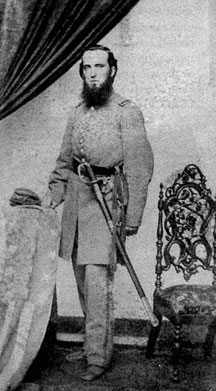

|

NAME: James Mathewson
BORN: 1837
DIED: ?
ALLEGIANCE: Union
HIGHEST RANK: Captain
UNIT: 7th Massachusetts Infantry, Company B
RECORD: Enlisted on June 15, 1861. Fought in
Peninsula Campaign and in the May 1-4, 1863, Battle of
Chancellorsville. Wounded in the May 1864 Battle of the
Wilderness. Mustered out on July 5, 1864.
|
|
James Mathewson was a Machinist by trade, a worthy
occupation for a son of New England, home of the industry
and innovation that were making American commerce and
transportation grow by leaps and bounds. When the Civil War
erupted in 1861, the 24-year-old Mathewson stood up for his
state and the Union she espoused, and volunteered for
military service. He accepted a commission as a second
lieutenant in the 7th Massachusetts Infantry and was
mustered in on June 15, 1861.
When Mathewson strode into H. B. King's Photographic Rooms
in his home town of Taunton, Massachusetts, that same month,
he was clad not in Union blue, but in a frock coat and
trousers as gray as any Rebel's. Mathewson had not switched
loyalties; he was merely wearing the uniform the Bay State
had issued to several of her regiments. In the color of his
woolen outfit, Mathewson shared the predicament of many
other Union soldiers early in the war: they were friends who
looked like foes. When Mathewson's regiment reached
Washington, D.C., in July, the fledgling soldiers traded
their Massachusetts gray for less conspicuous Union blue.
In November 1861, Mathewson was promoted to first lieutenant
of Company B. The 7th Massachusetts embarked for Virginia at
the end of March 1862 as part of Brigadier General Darius
Couch's 1st Division of the Army of the Potomac's IV Corps.
The unit saw hard fighting in Major General George
McClellan's Peninsula Campaign late that summer, and
Mathewson received captain's bars that fall, on October 25.
The following May, the 7th Massachusetts participated in the
Union attacks on Marye's and Salem Heights at
Fredericksburg, Virginia--successes too insignificant to
save the army from a crushing defeat in the Battle of
Chancellorsville. One year later, on May 5, 1864, Captain
Mathewson led his company into the nightmarish fighting in
Virginia's Wilderness, where a Confederate bullet ended the
war for him. He spent the last few weeks of his three year
enlistment recuperating from his wound, and was mustered out
with his comrades on July 5, 1864.
Source: Civil War Times Illustrated
38:5 (October 1999), 88.
|